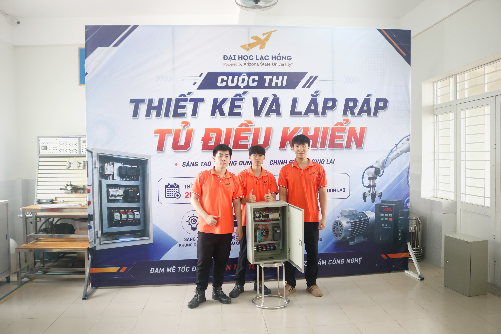

Bảo trì điện công nghiệp
Kiểm tra nguồn, relay, contactor, cảm biến, động cơ và các phần tử trong mạch điều khiển; tiếp cận sự cố theo từng bước để khoanh vùng nguyên nhân.
ĐOÀN NGUYỄN MINH QUANG
Mình định hướng phát triển trong môi trường nhà máy, nơi cần sự chính xác, kỷ luật và khả năng xử lý sự cố thực tế. Mình đặc biệt quan tâm đến bảo trì thiết bị, lắp tủ điện, PLC, đấu nối và kiểm tra hệ thống điều khiển.
Bảo trì & xử lý sự cố
PLC & lắp tủ điện
Thiết kế máy tự động
assets/avatar.jpg
01 — GIỚI THIỆU

Mình là Đoàn Nguyễn Minh Quang, theo học ngành Cơ điện tử nhưng định hướng nghề nghiệp nghiêng nhiều hơn về điện công nghiệp, bảo trì, lắp tủ điện và PLC.
Mình thích những công việc đòi hỏi vừa hiểu nguyên lý vừa phải thao tác thực tế: đọc sơ đồ điện, đấu nối thiết bị, kiểm tra tín hiệu, tìm nguyên nhân lỗi và đưa hệ thống trở lại trạng thái ổn định.
Mục tiêu của mình là phát triển thành một kỹ thuật viên/kỹ sư có khả năng làm việc tốt tại hiện trường, hiểu thiết bị và chủ động trong bảo trì, cải tiến hệ thống tự động.
Ưu tiên hiểu nguyên lý trước khi thao tác.
Tập trung vào bài toán thật và khả năng vận hành.
Đề cao an toàn, tính ổn định và chất lượng công việc.
02 — NĂNG LỰC
Nội dung được định hướng theo công việc bảo trì, điện công nghiệp và hệ thống điều khiển trong môi trường nhà máy.
Kiểm tra nguồn, relay, contactor, cảm biến, động cơ và các phần tử trong mạch điều khiển; tiếp cận sự cố theo từng bước để khoanh vùng nguyên nhân.
Làm quen với tư duy logic PLC, tín hiệu vào/ra, liên động, trình tự vận hành và kiểm tra tín hiệu trong hệ thống tự động.
Quan tâm đến bố trí thiết bị, đi dây gọn, đánh số, đấu nối theo sơ đồ và kiểm tra từng nhánh trước khi cấp điện vận hành.
Kết nối phần cơ khí, điện và điều khiển để hiểu toàn bộ chu trình hoạt động, từ đó hỗ trợ lắp đặt, bảo trì và cải tiến máy.
03 — DỰ ÁN & TRẢI NGHIỆM
Những dự án dưới đây là những gì mình đã trực tiếp tham gia và học được trong quá trình làm việc với các bài toán kỹ thuật thực tế.
Đề tài giúp mình tiếp cận quá trình tích hợp cảm biến vào một hệ thống thực tế: đọc dữ liệu, xác thực người dùng, xử lý trạng thái và điều khiển đầu ra theo logic chương trình.
• Kết nối và kiểm tra cảm biến vân tay.
• Xử lý các trạng thái nhận diện / không nhận diện.
• Hiển thị và điều khiển thiết bị đầu ra theo kết quả xác thực.

Mình có cơ hội tham gia quá trình hình thành một phương án máy tự động, từ ý tưởng cơ cấu, bố trí thiết bị đến cách hệ thống phối hợp để hoàn thành chu trình vận hành.
• Tham gia thảo luận và phát triển phương án cơ cấu.
• Rèn tư duy thiết kế máy theo tính khả thi và khả năng lắp ráp.

Cuộc thi giúp mình có thêm trải nghiệm thực tế trong việc đọc sơ đồ, lựa chọn và bố trí thiết bị, đấu nối mạch điều khiển cũng như kiểm tra hệ thống trước khi vận hành.
• Đọc và triển khai sơ đồ điện theo yêu cầu bài thi.
• Bố trí thiết bị, đi dây và đánh số dây trong tủ điện.
• Đấu nối contactor, relay, terminal, nguồn và các phần tử điều khiển.
• Kiểm tra thông mạch, nguồn cấp và xử lý lỗi trước khi vận hành.
Mình đang chủ động củng cố kỹ năng về đọc sơ đồ, đấu nối, kiểm tra I/O, tìm lỗi và tổ chức tủ điện sao cho rõ ràng, an toàn và thuận tiện cho bảo trì.
Trao đổi với mình về cơ hội thực tập / công việc ↗CV / RESUME
Bạn có thể tải CV để xem thông tin học tập, kỹ năng và quá trình tham gia các dự án kỹ thuật của mình.
04 — LIÊN HỆ
Nếu bạn đang tìm một ứng viên có định hướng rõ về điện công nghiệp, bảo trì, PLC và chịu khó học tại hiện trường, mình rất mong có cơ hội trao đổi.